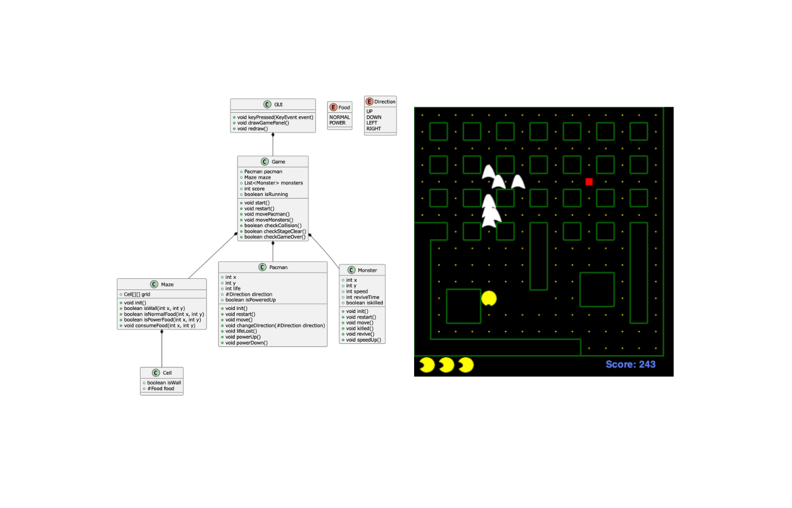

東京工業大学（現東京科学大学）の授業「ソフトウェア設計と品質」の最終課題として、Pacmanゲームの実装と分析を行いました。この課題では、オブジェクト指向プログラミングの設計原則に基づいて、Pacmanゲームを2段階の設計で実装しました。
URL
担当
個人開発
プロジェクトの目的
オブジェクト指向プログラミングの設計原則を学び、実践することを目的としています。特に以下の点に焦点を当てました：
- クラスの適切な分割と責務の明確化
- コードの重複排除と再利用性の向上
- データの隠蔽とカプセル化
- メソッド名の統一と可読性の向上
実装した機能
- 基本的なPacmanゲームの実装（パックマンの移動、モンスターの移動、衝突判定など）
- パワーエサの実装（一定時間無敵状態になる）
- モンスターの復活システム
- ステージクリア時のマップ変更
- スコアシステム
使用技術
- Java
- オブジェクト指向プログラミング
- UML（クラス図、シーケンス図）
設計の特徴
2段階の設計アプローチを採用しました：
- 設計1：基本的なPacmanゲームの実装
- 設計2：設計1の問題点を改善し、追加機能を実装
- Commonインターフェースの導入による共通コードの整理
- 不要なクラスの削除と責務の明確化
- メソッド名の統一と可読性の向上
- データの隠蔽の強化
制作過程
この課題は2段階の設計アプローチで進められました。
設計1では、基本的なPacmanゲームの実装を行いました。Main、GUI、Game、Pacman、Monster、Maze、Cell、Direction、Foodの各クラスを作成し、基本的なゲーム機能を実装しました。しかし、クラス間の依存関係が強く、コードの重複が多いなどの問題が見つかりました。
設計2では、設計1の問題点を改善しました。Commonインターフェースを導入して共通コードを整理し、不要なクラスを削除。また、パワーエサ機能、モンスターの復活システム、ステージクリア時のマップ変更などの新機能を追加しました。その結果、コードの可読性が向上し、機能追加が容易になりました。
この課題を通じて、設計段階での計画の重要性と、段階的な改善アプローチの有効性を学びました。